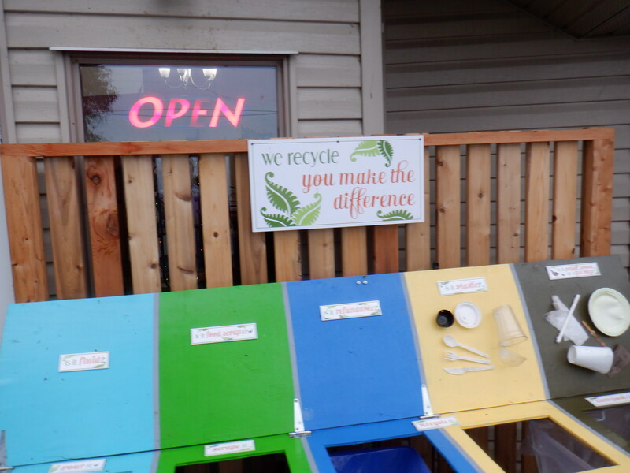
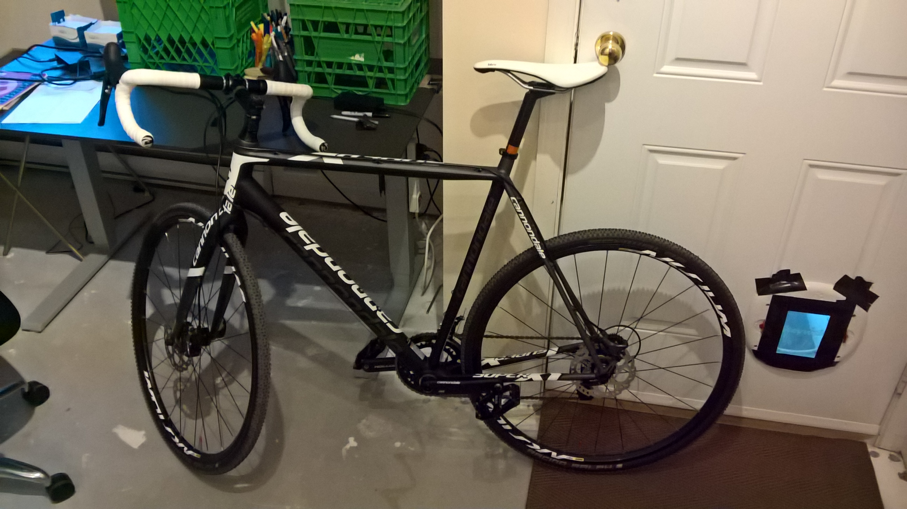

git Push and pull files between Windows 10 and WSL2 file systems with Git. This shows how to push and pull files between the Windows file system and the WSL2 file system. The unrelated photo shows some integration composting we are doing at the Fernwood Road Cafe
 git Output the number of Git commits a person made each day of the year in bash. It's the end of the year. Sometimes I want to know how many commits I made per day. This also helps me to see how many days I worked per year. (The unrelated
git Use Git Large File Storage (LFS) in the Windows Subsystem for Linux (WSL 1) I use Git as a backup storage system and the Windows Subsystem for Linux (WSL 1) as my Linux distribution. The Git LFS feature lets me use Git as a backup system for
git These are Git commands that I actually use on a regular basis, somewhat in the order of frequency that I use them. Fundamental Commands git clone git add some/file/name.js git commit -m "Commit message" git push git pull git log --oneline -10Intermediate Commands git add -u git add -A // avoid this in
git Git rebase a range of commits onto a new base starting a HEAD and excluding upstream. The rather cryptic incantation to do that is is this command: git rebase --onto <newbase> <upstream> e.g. git rebase --onto develop a2s4fx8That will rebase the range of commits
git PowerShell and Git to Capitalize all the Files in a Directory on Windows Windows is a case-folding operating system, which means that changing the case of a file name is non-trivial. The following uses PowerShell and Git to capitalize all the files names in a directory.
git Finding (searching for) things with Git Search file name git ls-files '<pathspec>' git log '<pathspec>' git rev-list --all -- '<pathspec>' Search file content git log -S '&
git Git: List the files you have worked on in the last week git log --no-merges --author=shaun --name-only --pretty=format:"" --since="1 week ago" -- *.cs | sort -u
git Change the base of a topic branch $ git rebase --onto staging develop topic That will move use from this situation: o---o---o---o staging \ o'--o'--o'--o'--o' develop \ *---*---* topic To this situation: o---o---o---o staging \ \ \ *---*---* topic \ o'--o'--o'--o'--o' develop See https://git-scm.
 git How we do code review at BigFont The unrelated image is of Shaun's new bicycle. Onward to code review: Initial Checklist Before reading the code we check these things: Do none of the PR files change when we auto-format them?
git Update a forked GitHub repository from its source The unrelated image is of a bee in our garden. Here is how we updated our fork of Ghost-Azure with the original Ghost-Azure repository. // Clone the fork, enter its directory, and checkout the
git List git branches with the date and author of the last commit git branch --sort=creatordate --sort=committername --format "%(align:20) %(creatordate:relative) %(end) %(align:25) %(committername) %(end) %(refname:lstrip=-1)" Tips: To list only remote branches, use the --remote flag. To list
git git clean with multiple exclude patterns Separate the exclude patterns with -e. git clean -xfd -e *.js -e *.map -n That will delete everything except *.js and *.map files. The -n does a dry-run to be safe. See git
git git rebase --strategy with -Xours -Xours tells Git to protect the new base. By bringing in only the additions that the incoming commits have made, it protects what is already in the new base. Recap: A rebase moves